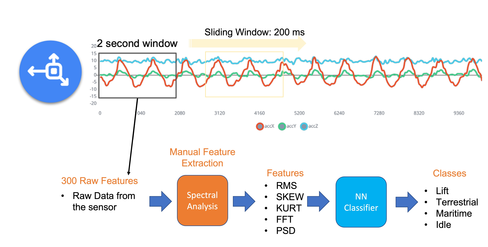
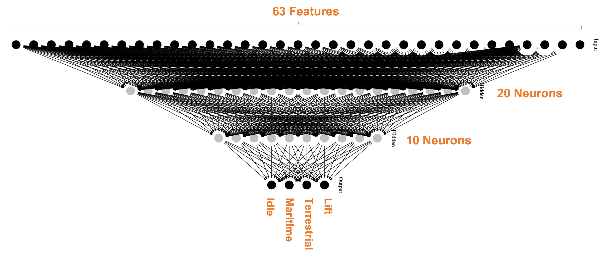
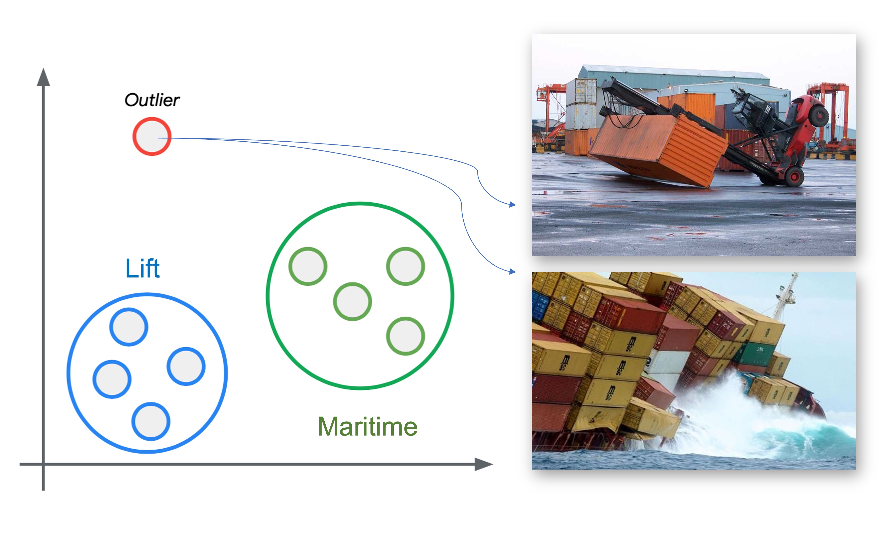
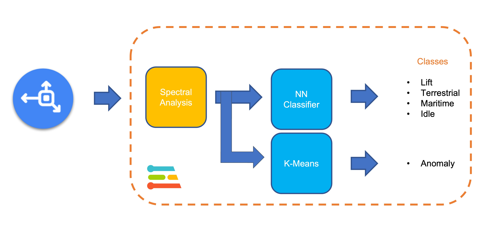
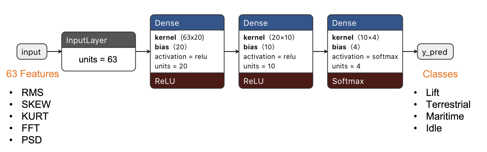
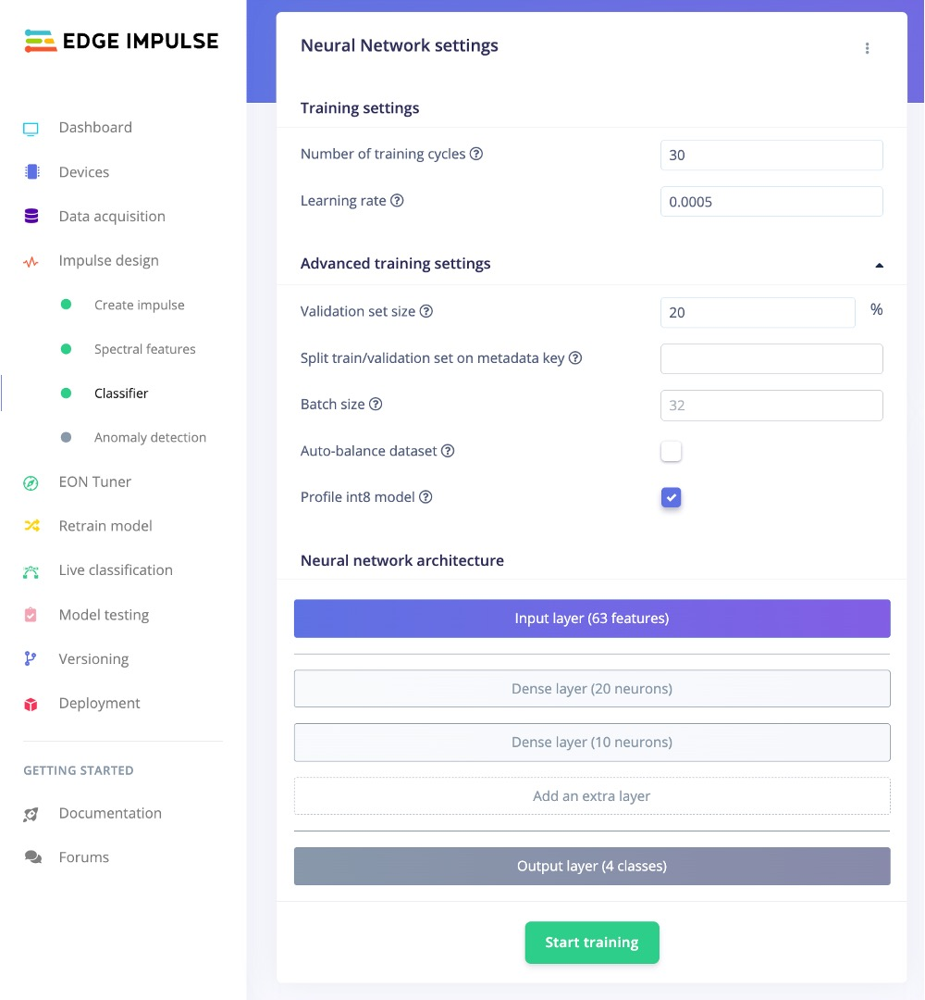
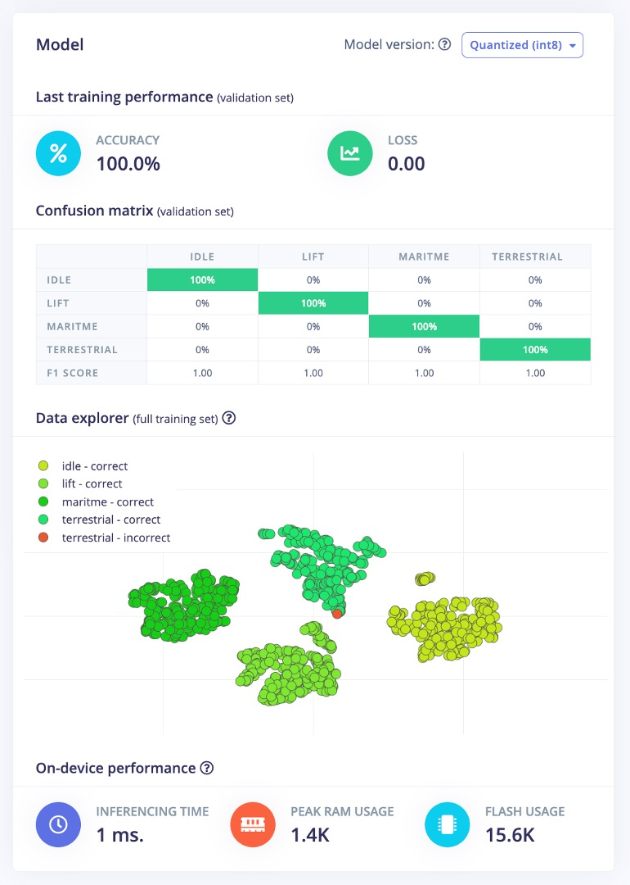
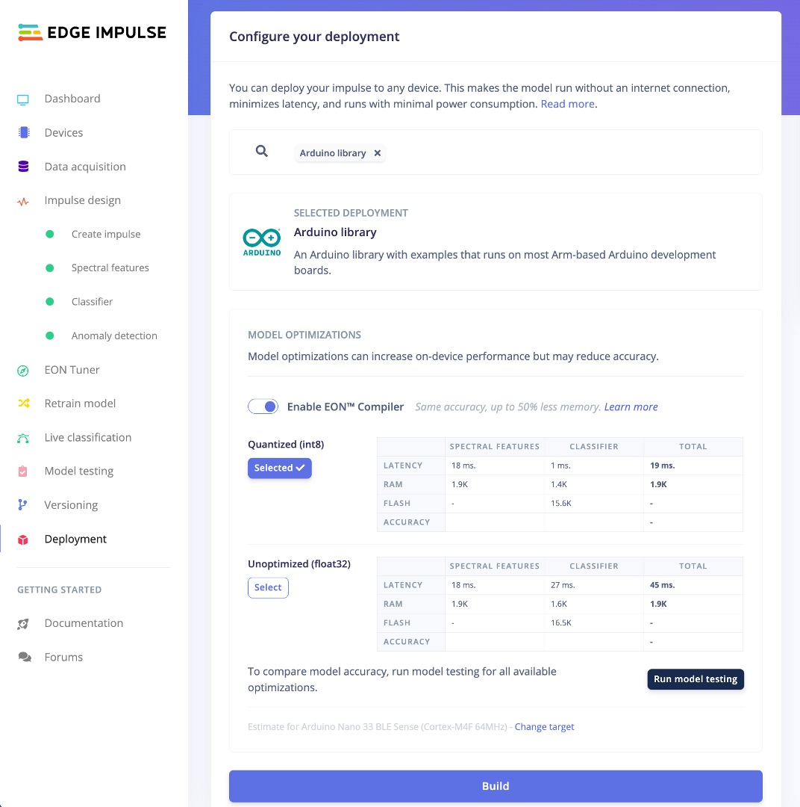

4.2 TinyML Made Easy: Anomaly Detection & Motion Classification

4.2.1 Things used in this project
Hardware components

Software apps and online services


4.2.2 Introduction
As you learned in the previous section, microcontrollers (MCUs) are very cheap electronic components, usually with just a few kilobytes of RAM, designed to use tiny amounts of energy. They can be found in almost any consumer, medical, automotive, and industrial device. Over 40 billion microcontrollers will be sold this year, and there are probably hundreds of billions in service nowadays. However, these devices get little attention because they’re often only used to replace the functionality of older electro-mechanical systems in cars, washing machines, or remote controls. More recently, with the Internet of Things (IoT) era, a significant part of those MCUs is generating “quintillions” of data that, in its majority, is not used due to the high cost and complexity (bandwidth and latency) of data transmission.
On the other hand, in recent decades, we have seen a lot of development in Machine Learning models trained with vast amounts of data in very powerful and power-hungry mainframes. And what is happening today is that due to those developments, it is now possible to take noisy signals like images, audio, or accelerometers and extract meaning from them by using Machine Learning algorithms such as Neural Networks.
And what is more important is that we can run these algorithms on microcontrollers and sensors themselves using very little power, interpreting much more of those sensor data that we are currently ignoring. This is TinyML, a new technology that enables machine intelligence right next to the physical world.
TinyML can have many exciting applications for the benefit of society at large.
This section will explore TinyML, running on a robust and tiny device, the Seed XIAO nRF52840 Sense（also called XIAO BLE Sense）.
4.2.3 XIAO nRF52840 Sense

MainFeatures
- Bluetooth 5.0 with onboard antenna
- CPU: Nordic nRF52840, ARM® Cortex®-M4 32-bit processor with FPU, 64 MHz
- Ultra-Low Power: Standby power consumption is less than 5μA
- Battery charging chip: Supports lithium battery charge and discharge management
- 2 MB flash
- 256 KB RAM
- PDM microphone
- 6-axis LSM6DS3TR-C IMU
- Ultra Small Size: 20 x 17.5mm, XIAO series classic form-factor for wearable devices
- Rich interfaces: 1xUART, 1xI2C, 1xSPI, 1xNFC, 1xSWD, 11xGPIO(PWM), 6xADC
- Single-sided components, surface mounting design
4.2.3.1 Connecting the XIAO nRF52840 Sense with Arduino IDE
The simple way to test and use this device is using the Arduino IDE. Once you have the IDE installed on your machine, navigate to File > Preferences, and fill in “Additional Boards Manager URLs” with the URL below: https://files.seeedstudio.com/arduino/package_seeeduino_boards_index.json

Now, navigate to Tools→Board→Board Manager in the top menu, and type in the filter keyword seeed nrf52 in the search box.
You will see two installation packages: Seeed nRF52 Boards and Seeed nRF52 mbed-enabled Boards, the differences between these two packages are as follows:
Seeed nRF52 Boards: Friendly for Bluetooth and low-power compatibility, suitable for Bluetooth and low power applications.Seeed nRF52 mbed-enabled Boards: Friendly for TinyML support, suitable for making TinyML or Bluetooth-related projects, but not suitable for applications with high low-power requirements.
Because we will develop a TinyML project, we chose the latest version of the Seeed nRF52 mbed-enabled Boards package. Install it and wait until you see a successful installation prompt in the output window.

Now, you can access this device from your Arduino IDE by selecting the development board and serial port, as shown in the figure below.

Your development board is now ready to run code on it. Let’s start with Blink - lighting up the LED. Note that the board does not have a regular LED like most Arduino boards. Instead, you will find an RGB LED that can be activated with “reverse logic” (you should apply LOW to activate each of the three separate LEDs). Test your RGB LED with the following code:
void setup() {
// initialize serial.
Serial.begin(115200);
while (!Serial);
Serial.println("Serial Started");
// Pins for the built-in RGB LEDs on the Arduino Nano 33 BLE Sense
pinMode(LEDR, OUTPUT);
pinMode(LEDG, OUTPUT);
pinMode(LEDB, OUTPUT);
// Note: The RGB LEDs are ON when the pin is LOW and off when HIGH.
digitalWrite(LEDR, HIGH);
digitalWrite(LEDG, HIGH);
digitalWrite(LEDB, HIGH);
}
void loop() {
digitalWrite(LEDR, LOW);
Serial.println("LED RED ON");
delay(1000);
digitalWrite(LEDR, HIGH);
Serial.println("LED RED OFF");
delay(1000);
digitalWrite(LEDG, LOW);
Serial.println("LED GREEN ON");
delay(1000);
digitalWrite(LEDG, HIGH);
Serial.println("LED GREEN OFF");
delay(1000);
digitalWrite(LEDB, LOW);
Serial.println("LED BLUE ON");
delay(1000);
digitalWrite(LEDB, HIGH);
Serial.println("LED BLUE OFF");
delay(1000);
}Get this code online 🔗
https://github.com/Mjrovai/Seeed-XIAO-BLE-Sense/tree/main/Seeed_Xiao_Sense_bilnk_RGB
Here is the result:

4.2.3.2 Testing the Microphone
The XIAO nRF52840 Sense has a PDM digital output MEMS microphone. Run the below code for testing it:
#include <PDM.h>
// buffer to read samples into, each sample is 16-bits
short sampleBuffer[256];
// number of samples read
volatile int samplesRead;
void setup() {
Serial.begin(9600);
while (!Serial);
// configure the data receive callback
PDM.onReceive(onPDMdata);
// optionally set the gain, defaults to 20
// PDM.setGain(30);
// initialize PDM with:
// - one channel (mono mode)
// - a 16 kHz sample rate
if (!PDM.begin(1, 16000)) {
Serial.println("Failed to start PDM!");
while (1);
}
}
void loop() {
// wait for samples to be read
if (samplesRead) {
// print samples to the serial monitor or plotter
for (int i = 0; i < samplesRead; i++) {
Serial.println(sampleBuffer[i]);
// check if the sound value is higher than 500
if (sampleBuffer[i]>=500){
digitalWrite(LEDR,LOW);
digitalWrite(LEDG,HIGH);
digitalWrite(LEDB,HIGH);
}
// check if the sound value is higher than 250 and lower than 500
if (sampleBuffer[i]>=250 && sampleBuffer[i] < 500){
digitalWrite(LEDB,LOW);
digitalWrite(LEDR,HIGH);
digitalWrite(LEDG,HIGH);
}
//check if the sound value is higher than 0 and lower than 250
if (sampleBuffer[i]>=0 && sampleBuffer[i] < 250){
digitalWrite(LEDG,LOW);
digitalWrite(LEDR,HIGH);
digitalWrite(LEDB,HIGH);
}
}
// clear the read count
samplesRead = 0;
}
}
void onPDMdata() {
// query the number of bytes available
int bytesAvailable = PDM.available();
// read into the sample buffer
PDM.read(sampleBuffer, bytesAvailable);
// 16-bit, 2 bytes per sample
samplesRead = bytesAvailable / 2;
}The above code will continuously capture data to its buffer, displaying it in the Serial Monitor and Plotter:

Also, note that the RGB LED will be set up depending on the intensity of sound.
The Micrphone will not be used on this project in particular, but it is good to have it tested if it is your first time using the XIAO nRF52840 Sense.
4.2.3.3 Testing the IMU
Our tiny device also has integrated a 6-Axis IMU, the LSM6DS3TR-C, a system-in-package 3D digital accelerometer, and a 3D digital gyroscope. For testing, you should first install its library ‘Seeed Arduino LSM6DS3’.
Before programming the accelerometer with the Arduino IDE, you must add the necessary library for the sensor. Enter the library address 🔗 https://github.com/Seeed-Studio/Seeed_Arduino_LSM6DS3/ in the browser address bar, go to the GitHub page, click Code→Download ZIP to download the resource pack Seeed_Arduino_LSM6DS3-master.zip to the local area, as shown below.

Add the resource pack Seeed_Arduino_LSM6DS3-master.zip downloaded in the previous step in the menu bar’s Sketch→Include Library→Add .ZIP Library until you see a prompt that the library has been loaded successfully.
Run the test code based on Harvard University’s tinymlx - Sensor Test
Now, run the following test code based on Harvard University’s tinymlx - Sensor Test.
#include "LSM6DS3.h"
#include "Wire.h"
//Create an instance of class LSM6DS3
LSM6DS3 xIMU(I2C_MODE, 0x6A); //I2C device address 0x6A
char c;
int sign = 0;
void setup() {
Serial.begin(115200);
while (!Serial);
// configure the IMU
if (xIMU.begin() != 0) {
Serial.println("Device error");
} else {
Serial.println("Device OK!");
}
Serial.println("Welcome to the IMU test for the built-in IMU on the XIAO BLE Sense\n");
Serial.println("Available commands:");
Serial.println("a - display accelerometer readings in g's in x, y, and z directions");
Serial.println("g - display gyroscope readings in deg/s in x, y, and z directions");
Serial.println("t - display temperature readings in oC and oF");
}
void loop() {
// Read incoming commands from serial monitor
if (Serial.available()) {
c = Serial.read();
Serial.println(c);
}
if(c == 'a')sign=1;
else if(c == 'g')sign=2;
else if(c == 't')sign=3;
float x, y, z;
if (sign ==1) { // testing accelerometer
//Accelerometer
x = xIMU.readFloatAccelX();
y = xIMU.readFloatAccelY();
z = xIMU.readFloatAccelZ();
Serial.print("\nAccelerometer:\n");
Serial.print("Ax:");
Serial.print(x);
Serial.print(' ');
Serial.print("Ay:");
Serial.print(y);
Serial.print(' ');
Serial.print("Az:");
Serial.println(z);
}
else if (sign ==2) { // testing gyroscope
//Gyroscope
Serial.print("\nGyroscope:\n");
x = xIMU.readFloatGyroX();
y = xIMU.readFloatGyroY();
z = xIMU.readFloatGyroZ();
Serial.print("wx:");
Serial.print(x);
Serial.print(' ');
Serial.print("wy:");
Serial.print(y);
Serial.print(' ');
Serial.print("wz:");
Serial.println(z);
}
else if (sign ==3) { // testing thermometer
//Thermometer
Serial.print("\nThermometer:\n");
Serial.print(" Degrees oC = ");
Serial.println(xIMU.readTempC(), 0);
Serial.print(" Degrees oF = ");
Serial.println(xIMU.readTempF(), 0);
delay(1000);
}
}Get this code online 🔗
https://github.com/Mjrovai/Seeed-XIAO-BLE-Sense/blob/main/xiao_test_IMU/xiao_test_IMU.ino
Once you run the above sketch, open the Serial Monitor:

Choose one of the three options to test:
- a: Accelerometer (see the result on Plotter)
- g: Gyroscope (see the result on Plotter)
- t: Temperature (see the result on Serial Monitor)
The following images show the result:


4.2.4 The TinyML Motion Classification Model
For our project, we will simulate mechanical stresses in transport. Our problem will be to classify four classes of movement:
- Maritime (pallets in boats)
- Terrestrial (palettes in a Truck or Train)
- Lift (Palettes being handled by Fork-Lift)
- Idle (Palettes in Storage houses)

So, to start, we should collect data. Then, accelerometers will provide the data on the palette (or container).


From the above images, we can see that primarily horizontal movements should be associated with “Terrestrial class,” Vertical movements to “Lift Class,” no activity to “Idle class,” and movent on all three axes to Maritime class.
4.2.4.1 Connecting a Device to the Edge Impulse Studio
For data collection, we can have several options. In a real case, we can have our device, for example, connected directly to one container, and the data collected on a file (for example .CSV) and stored on an SD card (via SPI connection) or an offline repo in your computer. Data can also be sent remotely to a nearby repository, such as a mobile phone, using Bluetooth as done in this project: Sensor DataLogger. Once your dataset is collected and stored as a .CSV file, it can be uploaded to the Studio using the CSV Wizard tool.
In this video, you can learn alternative ways to send data to the Edge Impulse Studio.
In this project, we should first connect our device to the Edge Impulse Studio for data collection, which will also be used for data pre-processing, model training, testing, and deployment.
Follow the instructions here to install the Node.js and Edge Impulse CLI on your computer.
Once the XIAO nRF52840 Sense is not a fully supported development board by Edge Impulse, we should use the CLI Data Forwarder to capture data from the accelerometer and send it to the Studio, as shown in this diagram:

Your device should be connected to the computer serial and running a code to capture IMU (Accelerometer) data and “print them” on the serial. Further, the Edge Impulse Studio will “capture” them. Run the code below:
#include "LSM6DS3.h"
#include "Wire.h"
//Create an instance of class LSM6DS3
LSM6DS3 xIMU(I2C_MODE, 0x6A); //I2C device address 0x6A
#define CONVERT_G_TO_MS2 9.80665f
#define FREQUENCY_HZ 50
#define INTERVAL_MS (1000 / (FREQUENCY_HZ + 1))
static unsigned long last_interval_ms = 0;
void setup() {
Serial.begin(115200);
while (!Serial);
// configure the IMU
if (xIMU.begin() != 0) {
Serial.println("Device error");
} else {
Serial.println("Device OK!");
}
Serial.println("Data Forwarder - Built-in IMU (Accelerometer) on the XIAO BLE Sense\n");
}
void loop() {
float x, y, z;
if (millis() > last_interval_ms + INTERVAL_MS) {
last_interval_ms = millis();
x = xIMU.readFloatAccelX();
y = xIMU.readFloatAccelY();
z = xIMU.readFloatAccelZ();
Serial.print(x * CONVERT_G_TO_MS2);
Serial.print('\t');
Serial.print(y * CONVERT_G_TO_MS2);
Serial.print('\t');
Serial.println(z * CONVERT_G_TO_MS2);
}
}Get this code online 🔗
https://github.com/Mjrovai/Seeed-XIAO-BLE-Sense/blob/main/XIAO_BLE_Sense_Accelerometer_Data_Forewarder/XIAO_BLE_Sense_Accelerometer_Data_Forewarder.ino
Go to the Edge Impulse page and create a project. Next, start the CLI Data Forwarder on your terminal, entering (if it is the first time) the following command:
$ edge-impulse-data-forwarder --cleanNext, enter your EI credentials, and choose your project, variable, and device names:

The Studio can read the sampled frequency as 51Hz instead of the 50Hz previously defined in the code. It is OK.
Go to the Devices section on your EI Project and verify if the device is connected (the dot should be green):

4.2.4.2 Data Collection
As discussed before, we should capture data from all four Transportation Classes:
- lift (up-down)
- terrestrial (left-right)
- maritime (zig-zag, etc.)
- idle

Below is one sample (10 seconds of raw data):

You can capture, for example, around 2 minutes (twelve samples of 10 seconds) for each of the four classes (a total of 8 minutes of data). Using the three dots menu after each one of the samples, select 2 of them, reserving them for the Test set. Alternatively, you can use the automatic Train/Test Split tool on the Danger Zone of Dashboard tab.

Once you have captured your dataset, you can explore it in more detail using the Data Explorer, a visual tool to find outliers or mislabeled data (helping to correct them). The data explorer first tries to extract meaningful features from your data (by applying signal processing and neural network embeddings) and then uses a dimensionality reduction algorithm such as PCA or t-SNE to map these features to a 2D space. This gives you a one-look overview of your complete dataset.
4.2.4.3 Data Pre-Processing
Data pre-processing is extracting features from the dataset captured with the accelerometer, which involves processing and analyzing the raw data. Accelerometers measure the acceleration of an object along one or more axes (typically three, denoted as X, Y, and Z). These measurements can be used to understand various aspects of the object’s motion, such as movement patterns and vibrations.
Raw accelerometer data can be noisy and contain errors or irrelevant information. Preprocessing steps, such as filtering and normalization, can clean and standardize the data, making it more suitable for feature extraction. In our case, we should divide the data into smaller segments or windows. This can help focus on specific events or activities within the dataset, making feature extraction more manageable and meaningful. The window size and overlap (window increase) choice depend on the application and the frequency of the events of interest. As a thumb rule, we should try to capture a couple of “cycles of data”.
With a sampling rate (SR) of 50Hz and a window size of 2 seconds, we will get 100 samples per axis, or 300 in total (3 axis x 2 seconds x 50 samples). We will slide this window every 200ms, creating a larger dataset where each instance has 300 raw features.

Once the data is preprocessed and segmented, you can extract features that describe the motion’s characteristics. Some typical features extracted from accelerometer data include: - Time-domain features describe the data’s statistical properties within each segment, such as mean, median, standard deviation, skewness, kurtosis, and zero-crossing rate. - Frequency-domain features are obtained by transforming the data into the frequency domain using techniques like the Fast Fourier Transform (FFT). Some typical frequency-domain features include the power spectrum, spectral energy, dominant frequencies (amplitude and frequency), and spectral entropy. - Time-frequency domain features combine the time and frequency domain information, such as the Short-Time Fourier Transform (STFT) or the Discrete Wavelet Transform (DWT). They can provide a more detailed understanding of how the signal’s frequency content changes over time.
In many cases, the number of extracted features can be large, which may lead to overfitting or increased computational complexity. Feature selection techniques, such as mutual information, correlation-based methods, or principal component analysis (PCA), can help identify the most relevant features for a given application and reduce the dimensionality of the dataset. The Studio can help with such feature importance calculations.
EI Studio Spectral Features
Data preprocessing is a challenging area for embedded machine learning. Still, Edge Impulse helps overcome this with its digital signal processing (DSP) preprocessing step and, more specifically, the Spectral Features Block.
On the Studio, the collected raw dataset will be the input of a Spectral Analysis block, which is excellent for analyzing repetitive motion, such as data from accelerometers. This block will perform a DSP (Digital Signal Processing), extracting features such as FFT or Wavelets.
For our project, once the time signal is continuous, we should use FFT with, for example, a length of [32].
The per axis/channel Time Domain Statistical features are:
The per axis/channel Frequency Domain Spectral features are:
- Spectral Power: 16 features (FFT Length/2)
- Skewness: 1 feature
- Kurtosis: 1 feature
So, for an FFT length of 32 points, the resulting output of the Spectral Analysis Block will be 21 features per axis (a total of 63 features).
You can learn more about how each feature is calculated by downloading the notebook Edge Impulse - Spectral Features Block Analysis TinyML under the hood: Spectral Analysis or opening it directly on Google CoLab.
Those 63 features will be the Input Tensor of a Neural Network Classifier.
4.2.4.4 Model Design
Our classifier will be a Dense Neural Network (DNN) that will have 63 neurons on its input layer, two hidden layers with 20 and 10 neurons, and an output layer with four neurons (one per each class), as shown here:

4.2.4.5 Impulse Design
A complete Impulse comprises three primary building blocks: the input block - which obtains the raw data, the processing block - which extracts features, and the learning block - which classifies the data. The following image shows the interface when the three building blocks still need to be added, and our machine-learning pipeline will be implemented by adding these three blocks.

Impulse obtains raw data through the input block, uses the processing block to extract features, and then uses the learning block to classify new data. In our continuous action recognition, the added blocks include:
1. Adding the input block: Time Series Data
Click the “Add an Input Block” button and select Time Series Data in the pop-up window as shown below to match the sensor data type we collected.

As shown in the figure below, set the Window Size to 2000 ms (2 seconds), the Window Increase to 80 milliseconds, and the Frequency to 51 Hz based on the calculations we made in the data preprocessing section on the Time Series Data block that appears.

2. Adding the processing block: Spectral Analysis
Click the “Add a Processing Block” button and select Spectral Analysis in the pop-up window as shown below to match our motion analysis task type.

The effect after adding the processing block is shown in the figure below.

3. Adding the learning block: Classification
Click the “Add Learning Block” button and select Classification in the pop-up window as shown below to match our motion analysis task type.

The interface of Impulse design after addition is shown in the figure below, and now the machine learning pipeline has been built.

In addition, we can also use a second model - K-means, which can be used for anomaly detection. If we imagine that we can treat our known classes as clusters, then any sample that does not fit into it might be an anomaly (for example, a container falling into the sea when the ship is at sea).

For this, we can use the same input tensor entering the NN classifier as the input to the K-means model:

Click the “Add Learning Block” button again and select Anomaly Detection (K-means) in the pop-up window below.
The final Impulse design is as shown in the figure below, click the Save Impulse button on the far right.

4.2.4.6 Generating features
At this point in our project, we have defined the pre-processing method and the model designed. Now, it is time to have the job done. First, let’s take the raw data (time-series type) and convert it to tabular data. Go to the Spectral Features tab, select Save Parameters,

and at the top menu, select Generate Features option and Generate Features button:

Each 2-second window data will be converted into one data point of 63 features. The Feature Explorer will show those data in 2D using UMAP.
Uniform Manifold Approximation and Projection (UMAP) is a dimension reduction technique that can be used for visualisation similarly to t-SNE, but also for general non-linear dimension reduction.
With the visualization, it is possible to verify that the classes present an excellent separation, which indicates that the classifier should work well.
Optionally you can analyze how important each one of the features is for one class compared with other classes.
4.2.4.7 Training
Our model has four layers, as shown below:

As hyperparameters, we will use a Learning Rate of 0.005 and 20% of data for validation for 30 epochs.

After training, we can see that the accuracy is 100%.

If a K-means block for anomaly detection has been added during model design, an additional section for Anomaly Detection will appear under the Impulse Design column on the left, as shown in the image below. Once inside the Anomaly Detection section, click [Select Suggested Axes], and the system will automatically make selections based on previously calculated important features. Then click on the [Start Training] button to begin the training. Results will be output in the Anomaly Explorer on the right after completion.

At this point, we have completed the basic machine learning training process.
4.2.4.8 Testing
Using the 20% of data set aside during the data collection phase, we can verify the model’s performance with unknown data. As shown in the image below, click on the Model Testing section on the left side of the Edge Impulse interface. Next to the [Classify All] button, there is an icon with three dots, click on it to open the Set Confidence Thresholds popup window. Here, you can set confidence thresholds for the results of the two learning blocks. We should define an acceptable threshold for results considered as anomalies. If a result is not 100% (which is often the case) but is within the threshold range, it is still usable.

Press the Classify All button to start the model testing. The model test results will be displayed upon completion, as shown in the image below.

4.2.4.9 Live Classification
Once the model is obtained, you should use the opportunity to test the Live Classification when your device is still connected to the Edge Impulse Studio. As shown in the image below, click on the Live Classification section on the left side of the Edge Impulse interface, then click the [Start Sampling] button.

At this time, you can, for example, shake the XIAO, the process is the same as the sampling; wait a few seconds, and the classification results will be given. As shown in the image below, I shook the XIAO vigorously, and the model unhesitatingly inferred that the entire process was anomalous.

Try now with the same movements used during data capture. The result should match the class used for training.
⚠️ Note: Here, you will capture real data with your device and upload it to the Edge Impulse Studio, where the trained model will be used for inference (though the model is not in your device).
4.2.4.10 Deployment
Now it is time for magic˜! The Studio will package all the needed libraries, preprocessing functions, and trained models, downloading them to your computer. You should select the option Arduino Library and at the bottom, select Quantized (Int8) and Build.

A Zip file will be created and downloaded to your computer.

On your Arduino IDE, go to Sketch tab and select the option Add .ZIP Library.

and Choose the.zip file downloaded by the Studio:

4.2.4.11 Inference
Now, it is time for a real test. We will make inferences wholly disconnected from the Studio. Let’s change one of the code examples created when you deploy the Arduino Library.
In your Arduino IDE, go to File/Examples tab and look for your project, and on examples, select nano_ble_sense_accelerometer:

Of course, the Arduino Nano BLE 33 differs from your board, the XIAO, but we can have the code working with only a few changes. For example, at the beginning of the code, you have the library related to Arduino Sense IMU:
/* Includes -------------------------------------------------------------- */
#include <XIAO_BLE_Sense_-_Motion_Classification_inferencing.h>
#include <Arduino_LSM9DS1.h>Change the “includes” portion with the code related to the XIAO nRF52840 Sense IMU:
/* Includes -------------------------------------------------------------- */
#include <XIAO_BLE_Sense_-_Motion_Classification_inferencing.h>
#include "LSM6DS3.h"
#include "Wire.h"
//Create an instance of class LSM6DS3
LSM6DS3 xIMU(I2C_MODE, 0x6A); //I2C device address 0x6AOn the setup function, initiate the IMU using the name that you stated before:
if (xIMU.begin() != 0) {
ei_printf("Failed to initialize IMU!\r\n");
}
else {
ei_printf("IMU initialized\r\n");
}At the loop function, the buffers: buffer[ix], buffer[ix + 1] and buffer[ix + 2] will receive the 3 axis data captured by the accelerometer. On the original code, you have the line:
IMU.readAcceleration(buffer[ix], buffer[ix + 1], buffer[ix + 2]);Change it with this block of code:
buffer[ix] = xIMU.readFloatAccelX();
buffer[ix + 1] = xIMU.readFloatAccelY();
buffer[ix + 2] = xIMU.readFloatAccelZ();And that is it! You can now upload the code to your device and proceed with the inferences. > You can find the complete code on the project GitHub
You can see the result of the inference of each class on the images:

Get this code online 🔗
https://github.com/Mjrovai/Seeed-XIAO-BLE-Sense/blob/main/XIAO_BLE_Sense_accelerometer/XIAO_BLE_Sense_accelerometer.ino
Post-processing
Now that we know the model is working since it detects the movements, we suggest that you modify the code to see the result with the XIAO completely offline (disconnected from the PC and powered by a battery, a power bank, or an independent 5V power supply).
The idea is that if one specific movement is detected, a particular LED could be lit. For example, if terrestrial is detected, the Green LED will light; if maritime, the Red LED will light, if it is a lift, the Blue LED will light; and if no movement is detected (idle), the LEDs will be OFF. You can also add a condition when an anomaly is detected, in this case, for example, a white color can be used (all e LEDs light simultaneously).
4.2.4.12 Conclusion
The Seeed Studio XIAO nRF52840 Sense is a giant tiny device! It is powerful, trustworthy, not expensive, low power, and has suitable sensors to be used on the most common embedded machine learning applications. Even though Edge Impulse does not officially support XIAO nRF52840 Sense, we also realized that it could be easily connected with the Studio.
On the GitHub repository, you will find the last version of the codes: Seeed-XIAO-BLE-Sense.
The applications for motion classification and anomaly detection are extensive, and the XIAO is well-suited for scenarios where low power consumption and edge processing are advantageous. Its small form factor and efficiency in processing make it an ideal choice for deploying portable and remote applications where real-time processing is crucial and connectivity may be limited.
4.2.4.13 Case Applications
Before we finish, consider that Movement Classification and Object Detection can be utilized in many applications across various domains. Here are some of the potential applications:
Industrial and Manufacturing
- Predictive Maintenance: Detecting anomalies in machinery motion to predict failures before they occur.
- Quality Control: Monitoring the motion of assembly lines or robotic arms for precision assessment and deviation detection from the standard motion pattern.
- Warehouse Logistics: Managing and tracking the movement of goods with automated systems that classify different types of motion and detect anomalies in handling.
Healthcare
- Patient Monitoring: Detecting falls or abnormal movements in the elderly or those with mobility issues.
- Rehabilitation: Monitoring the progress of patients recovering from injuries by classifying motion patterns during physical therapy sessions.
- Activity Recognition: Classifying types of physical activity for fitness applications or patient monitoring.
Consumer Electronics
- Gesture Control: Interpreting specific motions to control devices, such as turning on lights with a hand wave.
- Gaming: Enhancing gaming experiences with motion-controlled inputs.
Transportation and Logistics
- Vehicle Telematics: Monitoring vehicle motion for unusual behavior such as hard braking, sharp turns, or accidents.
- Cargo Monitoring: Ensuring the integrity of goods during transport by detecting unusual movements that could indicate tampering or mishandling.
Smart Cities and Infrastructure
- Structural Health Monitoring: Detecting vibrations or movements within structures that could indicate potential failures or maintenance needs.
- Traffic Management: Analyzing the flow of pedestrians or vehicles to improve urban mobility and safety.
Security and Surveillance
- Intruder Detection: Detecting motion patterns typical of unauthorized access or other security breaches.
- Wildlife Monitoring: Detecting poachers or abnormal animal movements in protected areas.
Agriculture
- Equipment Monitoring: Tracking the performance and usage of agricultural machinery.
- Animal Behavior Analysis: Monitoring livestock movements to detect behaviors indicating health issues or stress.
Environmental Monitoring
- Seismic Activity: Detecting irregular motion patterns that precede earthquakes or other geologically relevant events.
- Oceanography: Studying wave patterns or marine movements for research and safety purposes.